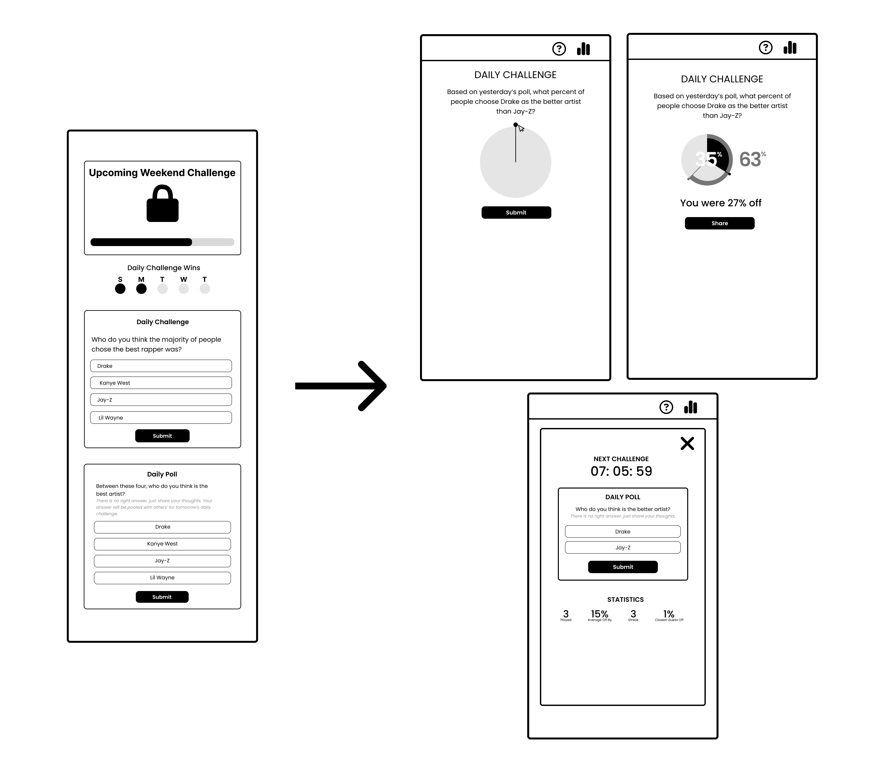

Timeline & My Role
- September 2023 - Present
- In development...
- Solo project
Opportunity Hypothesis
I was originally fascinated with how simple of a game Wordle was, while at the same time being so engaging and constantly being talked about among my friends and around my school. I wanted to create a similar game that would spark engaging, thoughtful, and meaningful discussions among people, while at the same time being simple and not overly complex.
pollthru was founded to create an engaging platform that empowers people to connect, compete, and have fun while collectively uncovering societal trends and preferences, enhancing their intuition and critical thinking in a friendly and thought-provoking environment.
End Product
Part 1: Discovery
Personas
User Interviews
To gain deeper insights into my target audience, I conducted user interviews. These interviews allowed me to connect with individuals I believed closely resembled our target personas. The primary goals were to assess their interest in the app and to understand their current mobile gaming habits, helping me refine our product based on their feedback.
Insights:
- Incorporate competitive elements to motivate users
- “I enjoy games and quizzes that challenge my critical thinking and problem-solving skills”
- Provide a variety of challenging tasks to keep users engaged and entertained. encourage regular participation
- “I like having a daily challenge to take on, like Wordle does, where it's quick but still a fun challenge. It's always a fun way to start my day or when I'm bored to challenge myself”
- Facilitate social interaction and allow users to connect with friends and compete with each other.
- “My friends and I are always super competitive and love challenging each other at games. Weather it's playing Fifa, TriviaCrack at lunch, or playing ping pong, we always try to outperform each other”
- People would enjoy the idea that their input would go towards the game and also guessing what others put.
- “I love the idea of being able to provide my own input and see if others can guess it. It's like a fun challenge where I get to be creative and see how well others know me."
- "Guessing other users' input is a great way to test my knowledge and intuition. It challenges me to think outside the box and consider different possibilities. It's a unique feature that sets this app apart."
Environmental Scan
- What's out there
- I analyzed four popular web and mobile applications centered around daily puzzles and challenges with friends.
- How we fit:
- What sets us apart:
- What distinguishes our app from the others is our unique approach to incorporating crowdsourcing and user opinions in shaping the challenges. I found that none of these popular apps had elements of crowdsourcing and incorporating users' opinions towards the challenges. Unlike the competition, our app places a strong emphasis on involving users towards the challenges, which presents an exciting opportunity for innovation and engagement.
- Similarities:
- Like these apps, we offer daily challenges that incentivize users to return regularly. Our game is designed to be quick, ensuring it can be enjoyed in a short burst of time. Additionally, we provide features that allow users to share their responses and answers with friends, fostering social interaction and competition.
- What sets us apart:
- Why we fit:
- Our mix of user involvement, daily challenges, quick gameplay, and social sharing sets us up as a compelling competitor in this space. By actively involving users in shaping the challenges, we tap into a desire for community-driven experiences that the other apps lack. This user-centric approach not only makes our app stand out but also positions it as a platform where users feel a deeper connection and ownership, ultimately fostering long-term engagement and loyalty. In essence, we offer a fresh and dynamic take on daily puzzles and challenges with friends.
Part 2: Wireframes and Iterations
Iterations
- Removal of Weekend Challenge and Points System:
- During user testing, we observed that the Weekend Challenge and points system caused confusion and hindered the desired simplicity of the game. Additionally, users who started playing later in the week had no chance to participate in the upcoming weekend challenge, leading to decreased engagement. As a result, we decided to eliminate these features, focusing on a streamlined day-to-day gameplay experience.
- Introduction of a Distinction Popup for Guessing Challenge and Poll:
- User feedback highlighted occasional confusion regarding the purpose of the daily challenge and daily poll. To address this, we took inspiration from competitors in the same space and introduced a popup feature. This popup serves to clearly differentiate between the two concepts and enhance user understanding.
- Inclusion of a Stats Section in the Popup to Boost User Engagement:
- Recognizing the early desire of users to compete with friends and surpass their personal best scores, we decided to enhance this aspect of the app. To encourage users to return daily and engage more, we added a stats section within the popup. This addition provides users with a tangible incentive to beat their previous records and compete with friends.
Part 3: High-Fidelity Prototype & Iterations
An aspect of the app we realized was hindering the experience was that the login feature caused a slowdown for users. The app relied on quick interactions, and the additional login step seemed to discourage users from diving right in. This realization prompted me to take a different approach. Instead of relying on Google authentication, I decided to implement localStorage, a solution that stores user data on their browser via cookies. This change not only eliminated the need for Google login but also significantly improved the user experience, making it more inviting and quicker to get started.
Part 4: Development
In the previous parts, I shared the initial concept and design phases of this project. Now, let's dive into the exciting realm of development, where all the pieces come together to bring an idea to life.
React
As I embarked on the development phase, one thing became clear from the outset: this project was going to be a learning experience, especially when it came to using React. It was my first time working with this JavaScript library, and I was eager to explore its capabilities. I dove into React's documentation and numerous online tutorials to get a grasp of its fundamentals.
localStorage
As discussed in 'PART 3: High-Fidelity Prototype & Iterations,' I made the decision to bypass Google Auth for the storage of user data and instead embraced a localStorage solution. This approach worked out exceptionally well and was straightforward to implement, thanks to well-explained documentation.
Firestore
Although I did not push any user data to Firestore, opting to use localStorage instead, I still needed a way to retrieve the daily questions that users would be seeing. I saw this as an opportunity to learn how to work with React and Firestore. Therefore, I utilized Firestore to fetch the questions that the user would encounter. By manipulating the 'rules', I enabled non-authenticated users to read the data, allowing them to access the questions.
Frontend Development
Frontend Development While React and Firestore proved to be powerful tools, the frontend development phase did present some challenges. Although I was not new to frontend development, I still had room to grow. The most significant challenge I faced was building the circular slider, a key element for the app's functionality.
Implementing a normal slider in React may be relatively straightforward, but a circular one posed a different challenge. After tackling some tricky geometry, algebra, and learning about strokeDashoffset and strokeDasharray for paths in JavaScript, I successfully implemented exactly what I had envisioned.